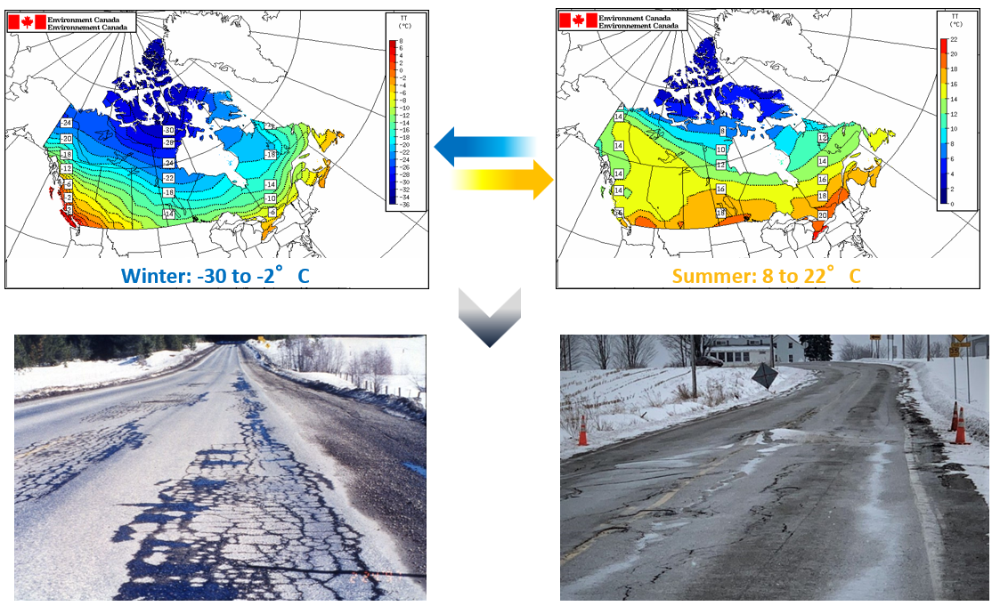
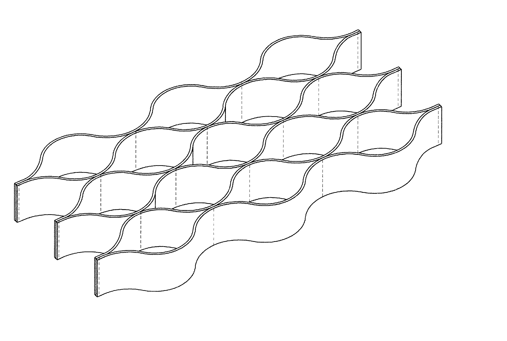
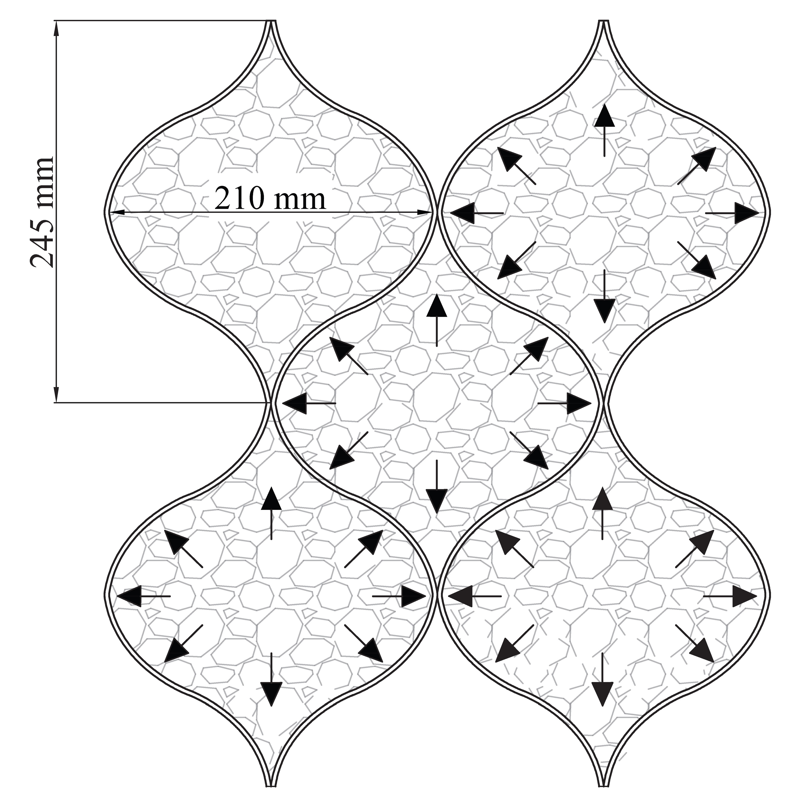
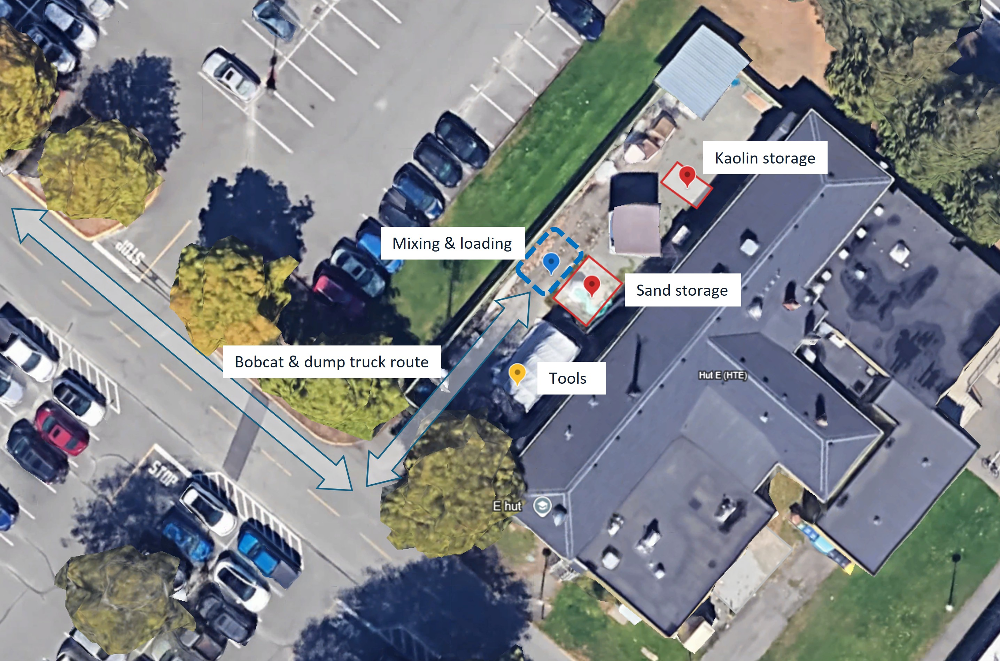
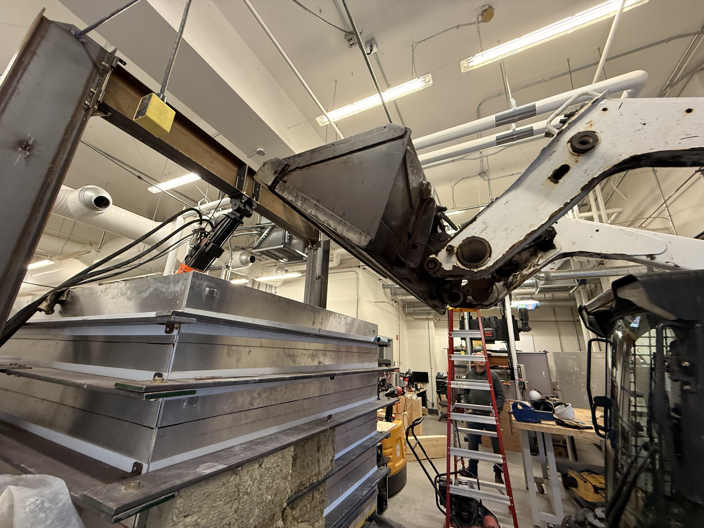
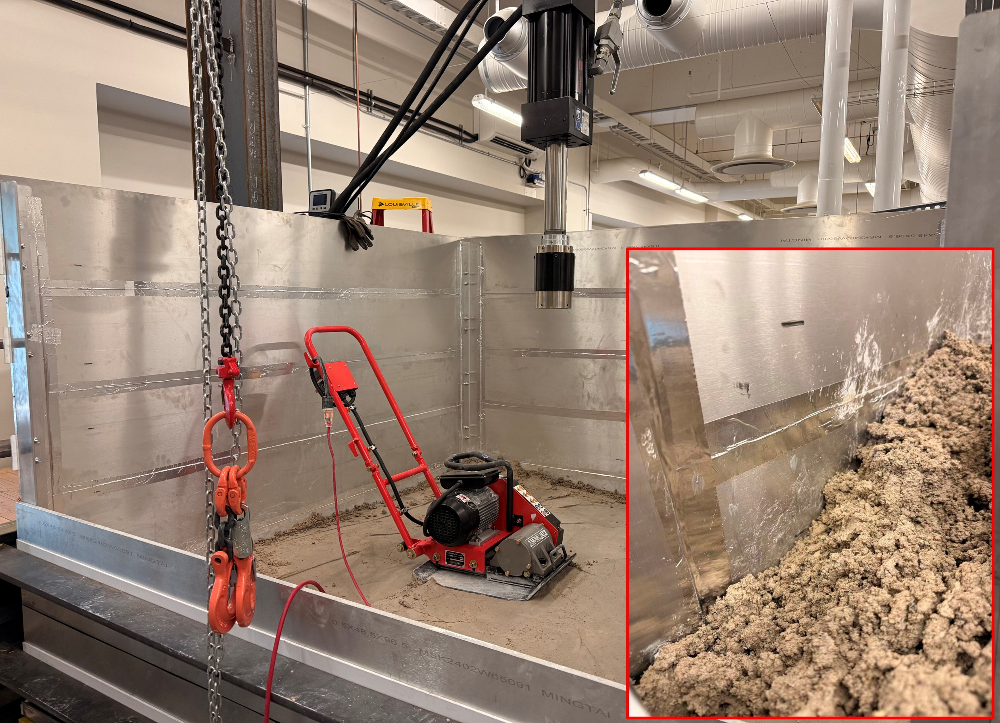
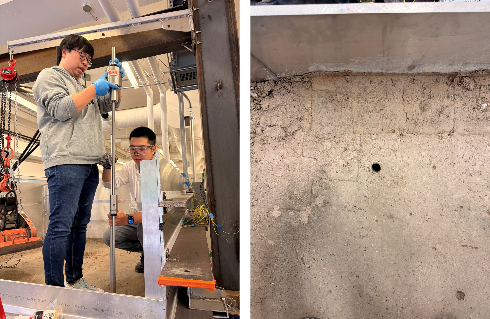
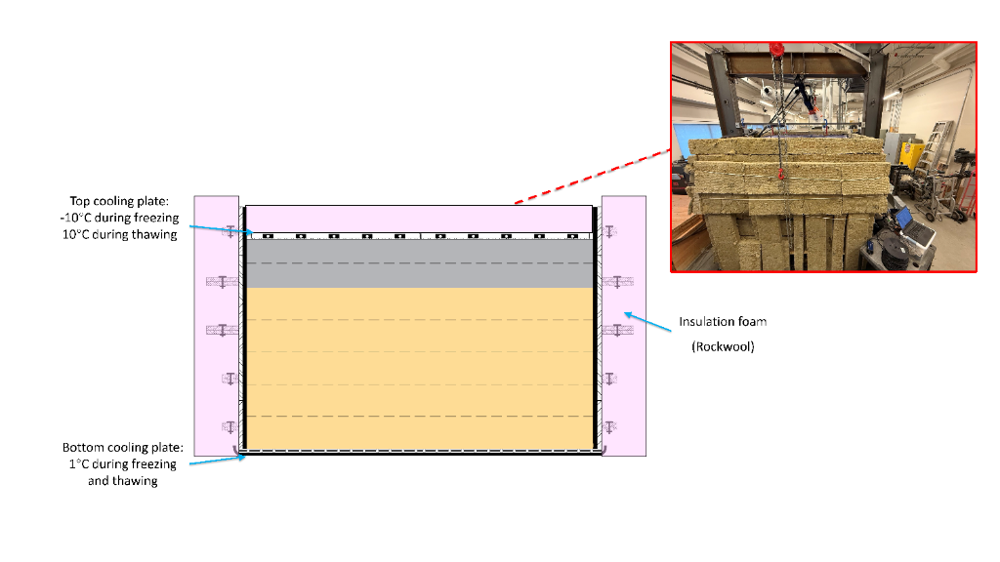
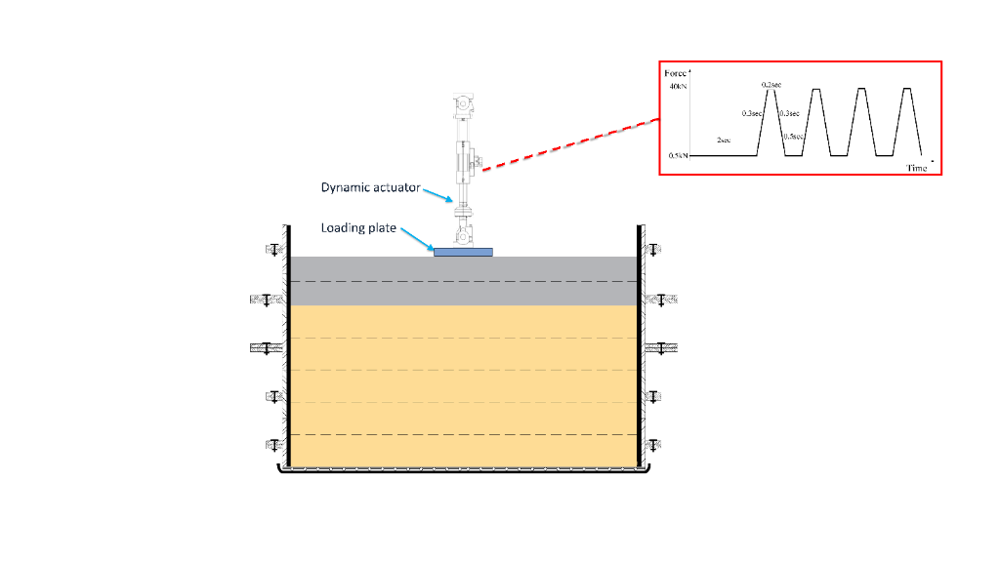

Large-Scale Freeze-Thaw Plate Loading Model Tests
Research Background

Understanding frost heave and thaw settlements is critical for the design of resilient infrastructure in cold regions.
The Big Box Initiative
Developing a large-scale laboratory cyclic FTPL apparatus to simulate cyclical thermal loading and structural loading.
Study Overview
Apparatus Overview & Dimensions

Geocell Reinforcement


Test materials used in this study were novel polymeric alloy (NPA) Type-C geocells, donated by PRS Geo-Technologies®. NPA is a composite polymer alloy comprised of a high-performance engineering thermoplastic with a polyolefin blend (polypropylene, polyethylene). The blend is immiscible with high-performance nano-polymer compound, which is dispersed in a polyolefin matrix.
Geocell Applications

Base Stabilization
GeoCell is a confinement system that outperforms conventional crushed stone sections, offering an efficient construction method for access roads over soft ground even in wet weather conditions. It can also be used to reinforce paved surfaces.
Slope Reinforcement
For slope applications, GeoCell can be filled with angular rock, concrete, or vegetated soil. The cells contain the infill material and form a stable erosion-resistant layer that conforms to the subgrade geometry. When vegetated or rock-filled, the system remains permeable, reducing surface runoff.


Channel Protection
GeoCell can be installed on slopes up to 60° and in channels with high flow velocities. Infill material selection determines the velocity rating: angular rock for up to 10 ft/s (3 m/s), vegetated soil up to 20 ft/s (6 m/s), and concrete for velocities exceeding 20 ft/s (6 m/s).
Retaining Walls
GeoCell is suited for both cut and fill retaining wall applications. The flexible HDPE panels are custom-dimensioned by the project engineer and can be installed around curves, pipes, and irregular structures. Panels can be stacked vertically or stair-stepped at each layer to create a green wall with exposed cells for vegetation.

Instrumentation & Specifications
view_in_ar On Box
layers In Soil
Logistics & Methodology
The following figures illustrate the soil preparation procedure and the freeze–thaw plate loading test process. The soil preparation procedure will be repeated for a total of seven lifts.
layersSoil Preparation
Logistics
Site Coordination & Planning
Material sourcing and on-site logistics were coordinated to ensure timely delivery of the granular subgrade and base course materials to CARSA. Site access, equipment staging, and material storage were planned to minimize lab downtime during the filling sequence.

Mixing
Moisture Conditioning
Granular materials were blended in a drum mixer and conditioned to a target moisture content. Measured water additions were incorporated to achieve uniform hydration throughout the aggregate, ensuring consistent compaction behaviour across successive lifts.

Transportation
Material Placement
Mixed material was transported into the lab and placed into the test box using a compact excavator. Lifts were deposited in controlled increments to maintain layer uniformity and avoid disturbing previously embedded instrumentation.

Raking & Compacting
Lift Densification
Each lift was manually raked to a uniform thickness before compaction with a vibratory plate compactor. Multiple passes were applied to achieve the target dry density, replicating field construction practice and ensuring repeatable specimen conditions.

Quality Control
Density & Sensor Verification
Field density and moisture measurements were taken at each lift to verify compliance with the target compaction specifications. Sensor continuity and seating were also confirmed at each stage before the next lift was placed, ensuring data integrity throughout the specimen build.

scienceTesting Program
Freeze-thaw Phase
Thermal Integrity Protocol
Samples are subjected to controlled thermal cycling to simulate extreme environmental degradation. Precise temperature modulation is achieved via the centralized chiller system to mimic winter freeze and spring thaw sequences.

Plate Loading Test Phase
Structural Capacity Test
Mechanical load application using the dynamic actuator and reaction frame. This phase quantifies the residual structural integrity and bearing capacity of the material after the freeze-thaw sequence has concluded.

Sensor Data Visualization
Temperature
Frost Heave
Water Content Profile
Temperature Profile
DFOS Strain at Bases
Awaiting Data Figure
DFOS Strain at Subgrade
Awaiting Data Figure